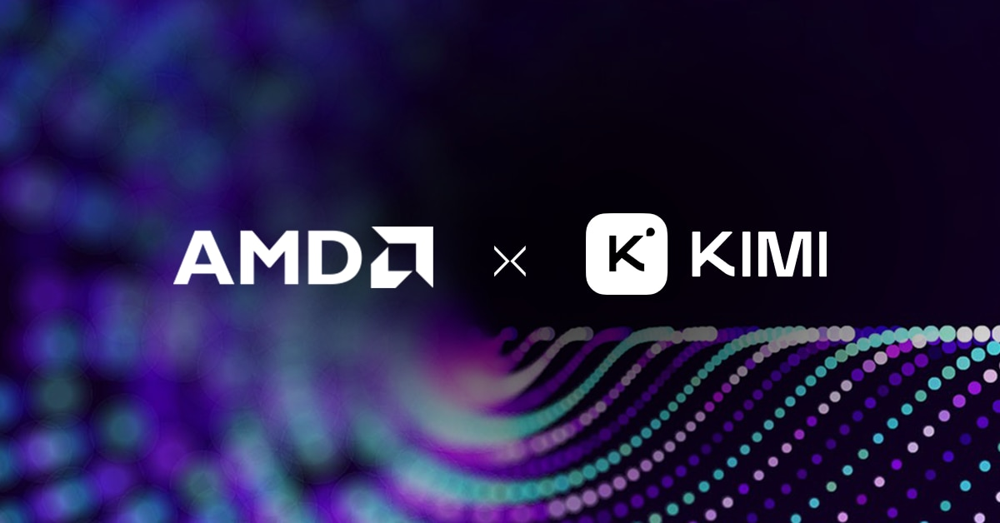
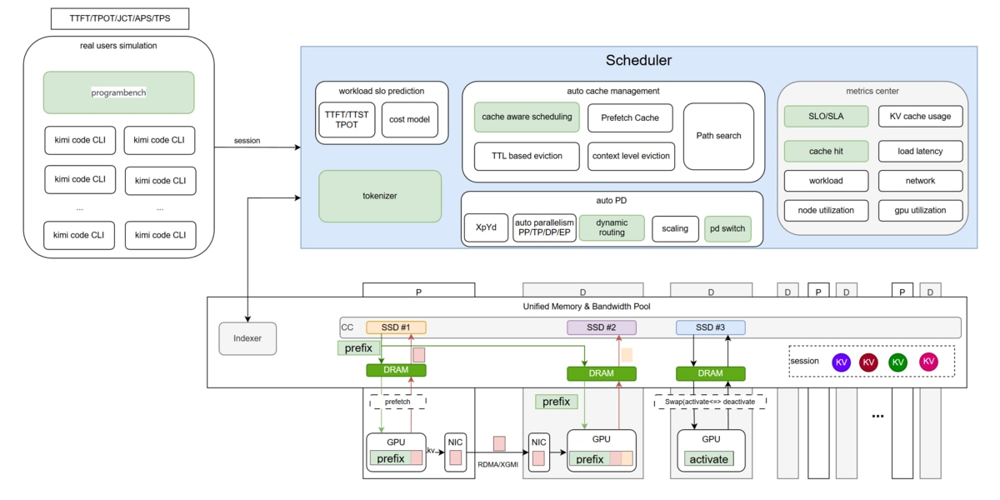
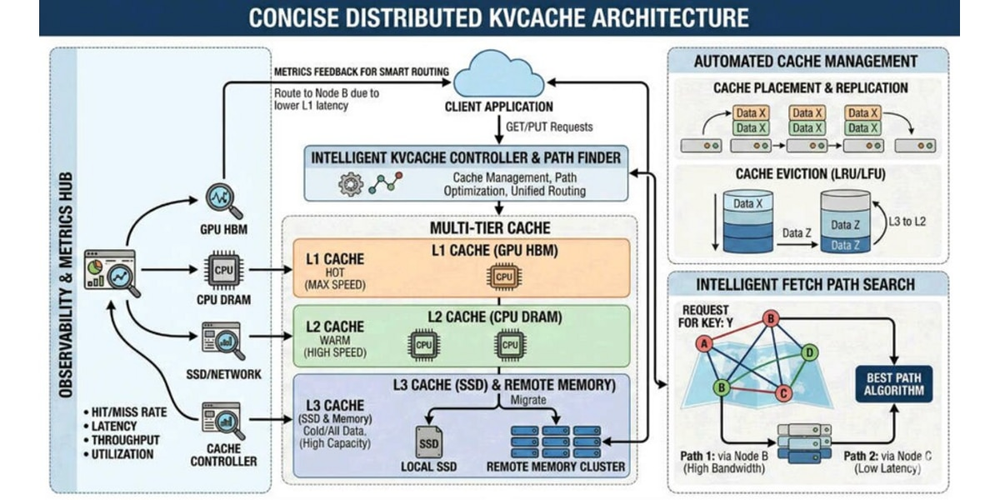
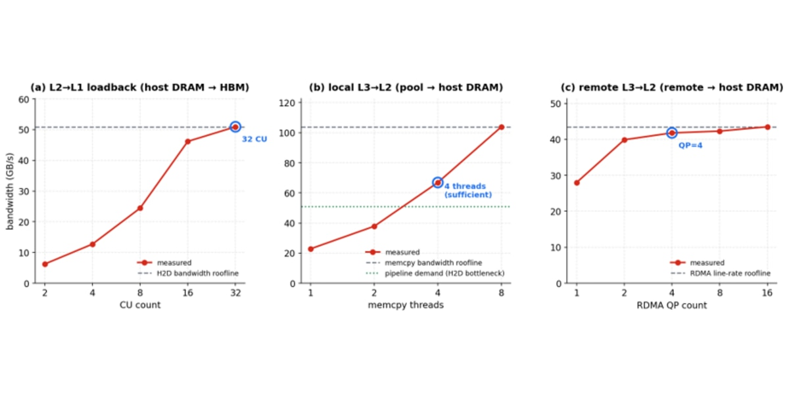
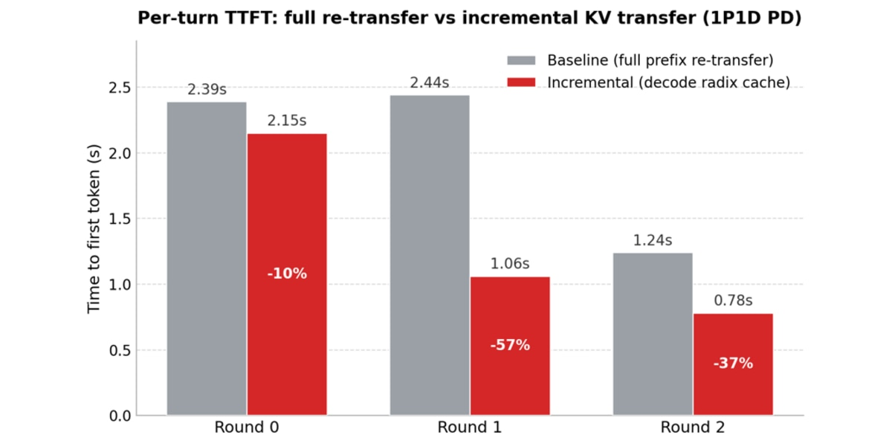
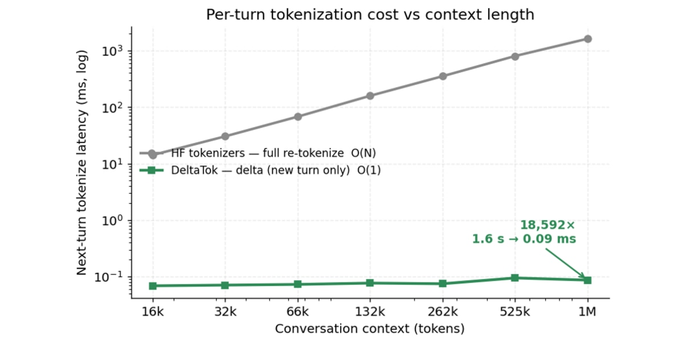
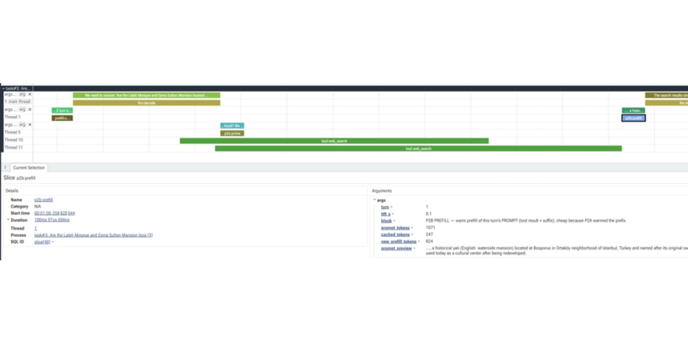
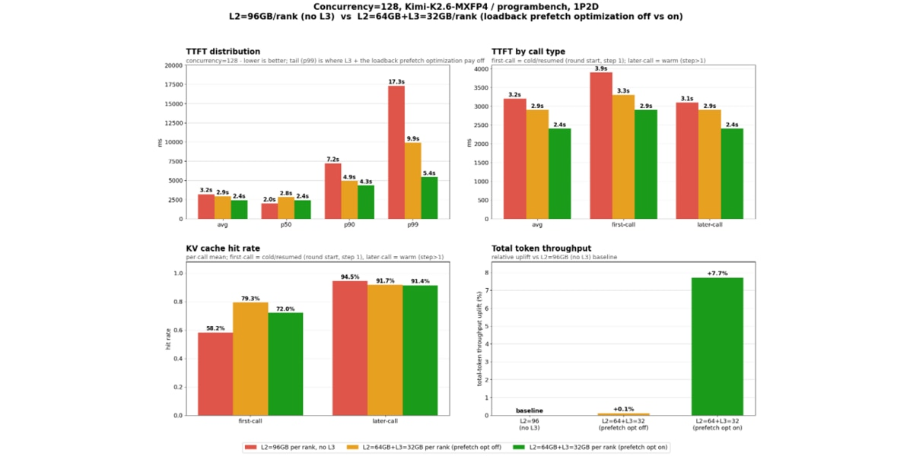
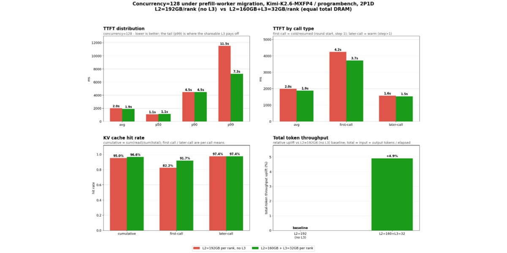

从第一性原理重建 AMD GPU 智能体 AI：携手 Moonshot AI

支撑当今聊天机器人的服务栈，是为一种正在快速被取代的工作负载构建的。随着 AI 从聊天转向智能体应用，这套栈赖以成立的假设会悄然失效，逐项打补丁已经不够。AMD 与 Moonshot AI 团队合作，回到第一性原理，在 AMD Instinct™ GPU 上从头重建了智能体服务栈。
由 Claude Code 等工具推动的智能体编程，token 消耗正在爆发式增长。这类会话持续时间长、轮次多，上下文随每轮线性增长；大量实际时间消耗在工具调用之间，而不是等待人类输入；还会成批生成生命周期很短的子智能体。服务经济性不再主要由原始计算量决定，而取决于 KV 缓存：能复用多少、超出 HBM 后存放在哪里，以及调度器是否知道缓存的位置。
本文介绍智能体工作负载的真实需求、AMD 与 Moonshot AI 在 AMD GPU 上构建的端到端方案、位于核心的内部组件 UMBP——KV 缓存与调度中枢——以及让它获得高性能的具体优化，并说明我们如何验证其正确性。
要点速览
- 智能体编程由缓存主导，且具有突发性。 上下文随轮次线性增长，KV 复用的理论上限极高；每轮等待工具调用，因此重要指标是 p90 端到端延迟，而非单独的 TTFT；短生命周期子智能体会制造 KV 缓存突发。
- AMD 与 Moonshot AI 构建了端到端智能体服务方案。 在 AMD Instinct™ MI355X 上运行 Kimi K2.6、SGLang、MoRI、UMBP、AITER 与 ROCm。
- 核心是 UMBP（Unified Memory & Bandwidth Pool，统一内存与带宽池）。 这是调度器感知的多层 KV 缓存：引擎 HBM → 主机 DRAM → UMBP 池 → SSD。它把缓存位置转化为路由器可以执行的成本模型，回答的不只是“谁有这个前缀”，而是“谁能最快提供它”。可共享 L3 配合 loadback 预取，在累计命中率基本不变的情况下，最多把 p99 TTFT 缩短 3.2 倍，并使总 token 吞吐提高 7.7%。
- 全栈优化叠加在缓存架构之上。 包括调度器感知的多层 KV 缓存、使用零 CU SDMA 恢复的 loadback 预取、增量 P→D KV 传输、增量 token 化 DeltaTok，以及单轮内工具与推理引擎重叠。
- 评估包含性能和准确率两部分。 性能使用基于 ProgramBench 构建的定制智能体编程数据集；准确率使用 Kimi Vendor Verifier（KVV / K2VV）。性能收益没有牺牲准确率。
智能体应用真正需要什么
从第一性原理重建服务栈，首先要诚实面对工作负载。智能体编程流量有清晰可辨的形态，其中每项特征都对应一个已经失效的聊天时代假设：
| 智能体特征 | 被打破的聊天时代假设 |
|---|---|
| 多轮会话，上下文随轮次数线性增长 | “预填充只需执行一次”是错误的；上下文每轮都会膨胀并逼近 HBM 上限 |
| 理论 KV 缓存命中率上限极高 | “全部重新计算也没关系”是错误的；全部收益都来自复用 |
| 工具调用之间存在大量短间隔 | “延迟约等于 TTFT/交互速度”是错误的；每轮等待的是工具而非人类 |
| 短生命周期子智能体带来 KV 缓存突发 | “流量稳定”是错误的；子智能体扇出以尖峰形式到达 |
| 工作集超过 HBM | “缓存能放进 GPU 内存”是错误的；缓存必须跨层卸载，并且仍可被路由 |
这直接产生两个后果，并决定后续全部设计。
第一，正确的延迟指标发生了变化。智能体时代，大多数轮次等待的不是人，而是工具调用，因此 TTFT 与解码墙钟时间之间的具体比例，已不像聊天时代那样重要。我们的优化目标是：在 p90 端到端延迟约束下，提高 token 吞吐（tok/s/chip）并降低每百万 token 的总体拥有成本（TCO），而不是孤立优化 TTFT 或交互速度。
第二，KV 缓存卸载成为一等优化手段，而不是事后补充。工作集超出 HBM 后，缓存今天会溢出到 CPU DRAM，未来还会进入 NVMe。现实容量有限：每台服务器可用的 KV 卸载通常只有数 TB CPU DRAM，并随 GPU 数量变化；可观的 DDR5 成本也必须计入 TCO。问题不再是要不要卸载，而是如何以低成本、正确且调度器可理解的方式卸载。
关键就在最后一点。当某个前缀已离开所有引擎的 HBM，却仍存在于某处——可能是一个节点的主机 DRAM，也可能是另一个节点的 SSD——只有系统能找到它，并且获取速度快于重新计算时，这份缓存的价值才能兑现。聊天时代的调度器看不到这些信息：KV 卸载后端只是被动字节存储；缓存在哪里、热度如何、取回成本多高，对最需要这些信息的调度层完全不可见。
因此，智能体服务的核心挑战是：KV 缓存放不进 HBM，卸载不可避免，而调度器不知道缓存究竟位于哪个层级、哪个节点，以及取回成本是多少。本文剩余部分要解决的就是这道鸿沟。
Kimi K2.6 简介
这些特征并非假设；前沿智能体模型一投入实际工作便会产生这样的负载。本文采用的模型是 Kimi K2.6。
Kimi K2.6 具有更强、更稳定的长周期代码编写能力，显著提升了指令遵循、自我纠错和复杂软件工程任务处理能力，也大幅增强了智能体自主执行能力。它采用原生多模态架构，支持文本、图像与视频输入、思考与非思考模式，以及对话和智能体任务。
从服务侧看，每项能力也会产生前文所述压力：长周期会话把上下文推过 HBM 容量；自主智能体执行使每轮受工具调用阻塞；多轮对话要求 KV 始终可复用。因此，K2.6 既是聊天时代服务栈失效的原因，也是替代方案必须达到的标尺。本文端到端服务的就是这个模型；在重建其下全部基础设施时，我们保持它的准确率不变。
与 Moonshot AI 共同构建的端到端智能体栈
AMD 与 Moonshot AI 没有把缓存简单附加到已有聊天服务器上，而是围绕上述负载共同设计了一套统一的端到端方案。它在 AMD Instinct™ MI355X 上通过 SGLang 和 AMD ROCm 平台运行 Kimi K2.6，并由 MoRI 提供通信与内存结构。

图 1：端到端智能体方案。调度器与统一内存和带宽池共同组成 KV 缓存与调度核心。
架构分为三层：
- 基准客户端（左上）。 大量并发 Kimi Code CLI 会话由基于 ProgramBench 的智能体工作负载驱动，产生真实智能体编程流量和我们关注的指标，包括 TTFT、TPOT、JCT（作业/任务完成时间）、APS 与 TPS，并向调度器建立会话。
- 调度器（中间）。 整个栈的大脑，融合四项职责：工作负载 SLO 预测（延迟预测与成本模型）；自动缓存管理（缓存感知调度、预取、按 TTL 与上下文层级淘汰、路径搜索）；自动 PD（XpYd 预填充/解码比例、跨 PP/TP/DP/EP 自动并行、扩缩容和动态路由）；以及为这些机制提供数据的指标中心，覆盖 SLO/SLA、KV 缓存用量、命中率、加载延迟、节点/GPU 利用率、网络与工作负载。
- 统一内存与带宽池（底部）。 即 KV 基础设施 UMBP。预填充（P）和解码（D）节点在多层池（GPU HBM → DRAM → SSD）上分离。前缀会被预取、通过 RDMA/XGMI 跨节点迁移，并在活跃与非活跃状态间换入换出，因此一个会话的 KV 无论当前位于哪里，始终可被路由。
这种分层是有意设计的。智能体流量的所有特征都指向同一结论：决定性资源不是 FLOPs，而是 KV 缓存——能兑现多少复用上限、超出 HBM 后缓存位于哪里，以及调度器能否比重新计算更快地路由到它。因此，图 1 中决定整套方案成败的是调度器与统一内存和带宽池的组合，也就是 KV 缓存卸载与请求调度。AMD 内部组件 UMBP 正位于这里。
核心：调度器感知的 UMBP 多层 KV 缓存
为什么现有 KV 卸载不够
现有多数 L3 KV 缓存后端——文件存储、Mooncake、NIXL、HF3FS 等——都是被动字节存储。HBM 满时，服务引擎把 page 下推；命中时再拉回。后端只负责保存和返回字节。系统在此过程中获得的信息——哪个节点持有哪些前缀、每个 block 有多热、某个副本实际返回数据有多快——都封闭在存储层，对调度器不可见。
聊天流量尚可容忍这种设计，智能体流量却恰恰相反，因为调度器最需要这些信息。当一个子智能体到达，而其前缀已经离开 HBM，正确决策可能是本地重算，也可能是从持有它的节点获取；若选择获取，还要决定使用哪个副本。这完全取决于放置、热度和获取成本。被动字节存储只能回答“这个前缀是否存在于某处”，无法回答“谁能最快提供它”。对于缓存主导的负载，后一个问题决定 p90 端到端延迟。
UMBP 是什么
UMBP（Unified Memory & Bandwidth Pool）是 AMD MoRI 库中的分层存储、分布式 KV 组件。我们以两种方式同时把它集成进 SGLang：既作为 HiCache L3 存储后端，也作为调度器可查询的 KV 事件源。它管理覆盖所有层级的单一逻辑缓存——引擎 HBM → 主机 DRAM → UMBP DRAM 池 → SSD——更关键的是，它把自身掌握的信息暴露给路由决策层。
UMBP 与被动字节存储有四点不同，也是设计的四根支柱：
- 对调度器友好，并与路由器共同设计（mori-sched）。 UMBP master 是覆盖所有层级的集群级 KV 放置目录。除“谁有前缀”外，它还公开逐 key 历史访问次数、路由命中计数、最后访问时间、逐节点容量与利用率、访问带宽直方图和 RPC 延迟。路由器据此构建真实成本模型，不是路由到恰好持有前缀的节点，而是路由到能最快提供它的节点。
- 可定制缓存管理策略。 卸载（put-routing）、加载（get-routing）、淘汰，以及规划中的复制，都是可插拔策略接口，并读取同一组丰富指标。缓存管理由硬编码 LRU 变成开发者可控制的表面，可针对特定智能体负载的重访模式调优。
- 智能体感知提示（开发中）。 TTL、会话固定和优先级提示从服务 API 经 HiCache 下传到 UMBP。智能体工作负载通常知道自己的重访模式，例如一个子智能体的父上下文很快会再次使用；这些提示让负载显式影响缓存保留，而不是完全交给通用淘汰启发式。
- 为 AMD 硬件亲和性而设计。 数据平面与 AMD GPU/CPU/NIC 能力共同设计，包括 IBGDA 与 SDMA 传输、GPU Direct Storage 和 GPU 发起的 NVMe，使 page 跨层或跨节点移动的成本尽可能接近硬件下限。
闭环
两项集成——L3 数据路径（UMBPStore ↔ client，零拷贝 RDMA）和 KV 事件源（KV events ↔ master ↔ router）——彼此解耦，可独立使用；组合后形成闭环：
引擎报告放置位置 → master 建立索引并累积访问历史 → 路由器依据成本模型路由（支柱 1）→ 路由决策训练命中历史 → 放置、淘汰和复制策略消费这些历史（支柱 2）→ 在工作负载更了解需求时由智能体提示覆盖策略（支柱 3）；全部运行在与 AMD 硬件共同设计的数据平面上（支柱 4）。
一句话概括收益：即便某个前缀已离开所有引擎 HBM，只要仍存在于 UMBP 池中，它就仍然可路由，并能通过 RDMA 从最近副本取回，而无需重算。这正是智能体高命中率理论上限承诺的收益，也是被动字节存储未能兑现的部分。

图 2：UMBP 架构。多层缓存（L1 GPU HBM → L2 CPU DRAM → L3 SSD/远程内存）由可观测性与指标中心支撑，包括命中/未命中率、延迟、吞吐和利用率，并将数据提供给 KVCache controller 的路径搜索器，从而闭合跨层 L3 数据路径和 KV 事件源。自动缓存管理负责放置、复制、LRU/LFU 淘汰，智能获取路径搜索则把请求路由到能够最快提供前缀的副本。
如何接入 SGLang
集成直接复用 SGLang 的现有机制，而不是重新发明：
| 关注点 | SGLang 接入点 | 底层 MoRI 调用 |
|---|---|---|
| L3 字节存储 | UMBPStore（零拷贝 v1 HiCache 接口） |
BatchGet / BatchPut / BatchExistsConsecutive |
| L2 主机缓冲区 | UMBPHostTensorAllocator hook |
主机 KV 张量注册 |
| KV 事件源 | KVEventsSubscriber ← 现有 ZmqEventPublisher（引擎无需改动） |
master 外部 KV 索引 |
| 路由 | mori-sched umbp_cache_aware 策略 |
每请求查询 master |
几项设计对智能体服务尤其重要。L3 路径直接对主机 KV page buffer 发出基于指针的 BatchGet/BatchPut，没有中间拷贝；L2 主机分配器提供基于 hugepage、绑定 NUMA、提前触页的张量，因此 KV buffer 只需为 RDMA 注册一次，一次 Put 或 Get 就准确对应一次 RDMA 操作。在分布式模式中，各 rank 加入由 master 领导的池；DP rank 间重复 put 由 master 去重；连接复用可避免数千并发请求——即前文的子智能体突发——耗尽端口。后端注册名为 mori，通过 --hicache-storage-backend mori 选择；整项集成由 flag 控制，未编译 UMBP 的构建不受影响。
这条数据平面已每天运行于我们的 PD 分离基准。调度器侧成本模型、可插拔策略和智能体提示正分阶段落地；目前 umbp_cache_aware 基于前缀匹配路由，完整的支柱 1 成本模型是下一步工作（设计与集成见 sgl-project/sglang#25377）。
关键优化
UMBP 建立缓存和路由架构，一系列全栈优化将架构转化为吞吐。下面每项优化都直接源于智能体流量特性，而不是聊天负载。
Loadback 预取与零 CU 恢复路径
在智能体服务中，前缀缓存是最重要的延迟杠杆：上下文每轮增长并不断重新进入，因此 KV 复用上限极高，前缀命中是常态而非例外。命中以存储换计算：从卸载位置获取前缀 KV，而不是重新计算，这会显著压缩长会话 TTFT。但只有恢复过程被隐藏时才能兑现收益：命中后，KV 位于一个或多个较低层级（主机 DRAM、本地 UMBP 池或远程节点），必须先加载回 HBM。若 loadback 位于关键路径，只是把重算换成停顿。因此目标是让 loadback 与模型前向重叠，在引擎需要 KV 前就把它放入 HBM，使命中成本接近零。两个机制使之成为可能。
向上预取所有层级，包括远程 KV。 成本模型知道会话前缀所在位置并预判其再次进入，因此 UMBP 提前把 KV 向上预取。来源取决于命中位置：本节点较低层（本地 L3）的前缀会向上 stage 到 HBM；另一节点（远程 L3）的前缀会跨网络拉到本地主机层，把远程 KV 缓存在本地，让后续轮次使用内存总线。远程 L3 在持有前缀的节点饱和时最有价值：调度器把请求路由到负载较低节点，再通过 RDMA 获取前缀，既避免排在繁忙节点之后，也避免重算，从而降低 TTFT。无论哪条路径，前缀都会在引擎使用前进入 HBM。
零 CU loadback。 最后一个恢复 hop L2→L1（主机 DRAM → HBM）可由计算内核或 SDMA 引擎发起。内核拷贝带宽随 CU 数量增加，在 32 个 CU 时接近 H2D 上限（约 51 GB/s），却会占用预填充需要的 CU。SDMA 拷贝引擎以零 CU 成本达到相同 H2D 上限，把 CU 还给预填充，因此恢复不再与预填充争夺计算资源。
恢复流水线每一阶段都接近对应传输的硬件上限（图 3）。L2→L1 达到约 51 GB/s H2D 带宽。本地 L3→L2 主机内存拷贝通过多线程和 non-temporal（NT）store 优化，在 4 线程时达到约 66 GB/s，已经高于流水线受 H2D 限制的需求，因此更多线程不会提高端到端性能。远程 L3→L2 路径为零拷贝，会聚合工作负载并分布到多个 NIC 与 QP，主机 RDMA 在 QP≈4 时达到约 42 GB/s，接近有效线速。每个上游阶段只需供给 H2D 恢复这一唯一瓶颈所需的带宽，而零 CU loadback 会将该瓶颈完全隐藏在模型前向之后。
这条路径达到理论目标：约束性的 L2→L1 H2D 阶段运行在约 51 GB/s 上限；远程 RDMA 达到线速约 96%（41.8/43.5 GB/s）。唯一低于硬件上限的是本地 memcpy，它可达到约 104 GB/s，但 4 线程已满足流水线需求，因此这是容量选择而非性能缺陷。

图 3：恢复路径各阶段带宽与硬件上限。（a）L2→L1 loadback 随 CU 数扩展，在 32 CU 时饱和 H2D 带宽约 51 GB/s；瓶颈是 H2D 而非 CU 并行度，MoRI 使用 SDMA 以零 CU 成本完成该 hop。（b）本地 L3→L2 内存拷贝在 4 线程时达到约 66 GB/s，已超过流水线 H2D 限制的需求，因此 4 线程足够。（c）远程 L3→L2 主机 RDMA 在 QP≈4 时饱和到约 42 GB/s。圈出的点为选定运行点。
跨预填充/解码分离的增量 KV 传输
PD 分离把预填充和解码放在不同节点，因此解码每轮运行前，该轮 KV 必须从 P 传到 D。对于聊天，这是一次性交接；对于智能体会话，线性增长问题会在网络上重现：上下文每轮变长，朴素方案每轮都会重新发送整个前缀，导致第 N 轮再次传输第 0 到 N−1 轮已经发过的数据。长编程会话中，这种冗余重传最终主导 P→D 路径，并直接增加 TTFT，因为 KV 到达前无法开始解码。
但解码侧其实已经持有绝大多数数据。若 D 侧跨轮保留 radix cache，第 N−1 轮收到的 KV page 在第 N 轮仍然存在，而 P 即将再次发送的正是这段前缀。解决方法与 UMBP 对卸载、DeltaTok 对 token 所采用的原则相同：复用未变化前缀。P→D 只发送 D 尚未持有的增量 page。
收益有两部分。最直接的是延迟：会话越长，已缓存且无需传输的前缀越大，收益越高。在双节点 1P1D 微基准中，后期、前缀占比高的轮次下降最大：第 1 轮 TTFT 从 2.44 秒降至 1.06 秒，第 2 轮从 1.24 秒降至 0.78 秒；前三轮平均 TTFT 降低约 21%（图 4）。另一部分是带宽：未发送的字节不会占用预填充 GPU 的 NIC 出口。一个 P 会向多个 D 供给数据，回收带宽后，链路饱和前可以承载更多并发 P→D 交接，包括子智能体突发，因此负载越高收益越会叠加，而不是只惠及单个请求。

图 4：PD 分离前三轮中，完整重传基线与增量传输的逐轮 TTFT。测试使用两个 AMD Instinct™ MI355X 节点、1P1D、DeepSeek-R1 MXFP4、DP=8 / TP=8 和 MoRI 传输后端。收益集中在后期前缀密集轮次：每轮传输字节减少 D 已持有的完整前缀，单轮 TTFT 最多降低 57%，三轮平均降低约 21%（1.73→1.37 秒），同时释放 P 侧 NIC 出口带宽。
Tokenizer 层：使用 DeltaTok 增量 token 化
线性上下文增长还有一项较隐蔽的 CPU 成本。token 化位于每个请求最前端（tokenize → block hash → 缓存查询），聊天时代路径每轮都会重新 token 化整个对话，复杂度随上下文长度 O(N) 增长。UMBP 让历史 KV 保持可路由；DeltaTok 则对 token 本身执行对称优化。
DeltaTok 是 UMBP 家族中面向智能体、由 AMD Zen 5 加速的 Rust tokenizer，并作为 SGLang 的权威 tokenizer，其 token ID 直接提供给引擎。核心手段是增量编码：它只从 chat template 推导一次轮次边界——先进行探测渲染，再把每个边界对齐到最近的特殊 token 硬边界，确保片段拼接满足 BPE 安全性——随后缓存各片段。下一轮只重新编码新增轮次，复杂度为 O(1)，与上下文长度无关，并复用未变化前缀。引擎保留复用前缀的 token（对应 KV 已存在），只追加新 token；结果与完整重新编码逐字节一致。
收益正好出现在长上下文、多轮智能体会话中。100 万 token 上下文下，完整重新 token 化每轮约需 1.7 秒；DeltaTok 下一轮增量仅需约 0.09 ms，并且不随上下文长度变化。它已在 Kimi 系列及其他生产 tokenizer 上与 HuggingFace AutoTokenizer 做逐字节精确验证，性能提升没有准确率代价。

图 5：逐轮 token 化延迟随上下文变化。HuggingFace 每轮重新处理完整历史，复杂度 O(N)，100 万 token 时约 1.7 秒；DeltaTok 只编码新增轮次，复杂度 O(1)，约 0.09 ms，在 100 万 token 时最多快 18,592 倍。测试平台为 AMD EPYC 9575F（Zen 5）。
CPU（工具）与 GPU（推理引擎）重叠
上述优化跨请求复用 KV；基于工具的智能体在单轮内部还会留下空闲窗口。一轮是依赖链：解码工具调用 → 运行工具 → 根据工具结果预填充下一轮。工具间隔——sandbox 往返、网页搜索、MCP、子智能体调用——通常是最长部分，经常接近一秒，而加速器在此期间闲置。这是调度问题而非模型问题；下面的重叠只改变调度顺序，不改变输出。
- 并发工具扇出同时分发一轮中互相独立且无副作用的调用，把工具等待由 Σ(tᵢ) 降为 max(tᵢ)。
- 流式解码中途分发在解码过程中解析
tool_calls流，一旦某个调用参数闭合就立即启动，使工具执行与解码尾部重叠，而不是等待完整解码结束。 - 跨轮前缀驻留与预填充重叠让会话共享提示前缀在工具间隔期间仍驻留。通过 session-scoped radix cache、
session_id、lock-ref 与优先级淘汰固定前缀，避免争用淘汰下一轮要复用的 block。下一轮只预填充依赖工具的新后缀，并命中前缀缓存，而非重算。
三项机制都保持语义：只有独立工具——读取操作或写入互不相交状态——才会提前或并行分发；依赖先前结果或可能冲突的工具仍按顺序串行运行。结果按原始索引重新组装，因此上下文与串行循环逐位一致。最终效果是：工具往返与当前轮解码重叠，下一轮针对驻留 KV 重建前缀，避免引擎本应出现的空闲。

图 6：调度器内置 profiler 捕获、在 Perfetto 中查看的一次混合预填充/解码调度智能体轮次。Kimi 运行在 MI355X 上，并调用真实网页搜索工具。两个 web_search 并行运行（fan-out），并在解码结束前分发；前缀 prime（p2a）插入工具间隔，为下一轮预热前缀，因此其预填充（p2b）命中缓存。
评估
评估分为两部分，因为系统必须同时满足两个条件：性能提升，并且回答保持正确。所有结果都使用原生 SGLang 在 AMD Instinct™ MI355X 上运行 Kimi K2.6。
第一部分：基于 ProgramBench 的智能体数据集性能
为了用真正的智能体负载驱动系统，我们在 ProgramBench 基础上构建定制数据集。ProgramBench 是洁净室软件工程基准：智能体只获得已编译可执行文件及其使用文档，必须设计并实现完整代码库来复现原程序行为；200 个任务由数十万隐藏行为测试判断。这非常适合压测智能体服务，因为它包含长多轮会话、大量工具使用和深度上下文增长。我们抽样并改造其中任务，生成可重放智能体编程轨迹。
流量生成方式。 我们不是使用合成 HTTP replayer，而是通过自研 SwarmPressure 驱动真实 Kimi CLI。它为每个任务启动一个隔离的 Kimi CLI 容器，注入任务二进制和文档，让智能体端到端解决问题：阅读文档、编写代码、针对真实构建/测试反馈迭代 compile.sh；请求发送到自建集群而非托管 API。因此上下文增长、工具调用间隔和轮次数都来自智能体决策，而非脚本轨迹，更接近真实负载。
会话轮换方式。 真实用户会离开，然后回到缓存已变冷的会话，因此服务集群总是同时包含热、温、冷状态。若基准始终保持同一批会话活跃，会报告不现实的热缓存。我们保持总并发不变，但任一时刻只让部分会话活跃：每个活跃会话运行有限时间片，然后被移出并由非活跃池中的会话替换；其 KV 像空闲用户一样在不同层级中老化，稍后再恢复。
“首次调用”衡量的就是恢复会话的下一次请求，其前缀有时间离开本地热缓存，必须从较低或远程层获取，或重新计算。轮换以现实速率产生此类调用，因此两个实验中真正发生变化的是首次调用命中率，而不是累计命中率。
两项实验采用共同指标：首次调用与后续调用 KV 命中率；TTFT 的平均值、p50、p90、p99，并按相同类型拆分；以及相对各自 L2-only 基线的总 token 吞吐提升。累计命中率在所有配置中几乎相同，会隐藏效果；可共享 L3 改变的是“哪些调用命中”，首次/后续调用拆分才能把变化与 TTFT 尾部关联起来。
两项实验均使用并发 128 并改变缓存层配置。差异在于 L3 为什么有效。实验 1 容量紧张：一个预填充实例、每 rank 96 GB 主机 DRAM，L3 通过避免 L2 复制税获得有效容量。实验 2 则使用两倍 DRAM（每 rank 192 GB）和两倍预填充实例，L2-only 基线已经健康；L3 仍有收益，因为不可访问的容量等同于不存在。
实验 1：高并发下的 L3 效果与 loadback 预取优化
这是高并发端的固定快照，此时纯 L2 预算压力最大。三次运行保持工作负载不变，只改变每 rank 缓存配置。固定条件为 Kimi-K2.6-MXFP4、1P2D、128 个并发 ProgramBench 智能体会话。每节点有 8× AMD Instinct™ MI355X、8× AMD Pensando™ Pollara 400G NIC，总 DRAM 预算 1 TB。
| 配置 | 每 rank L2 | 每 rank L3 | Loadback 预取优化 |
|---|---|---|---|
| A — 仅 L2 基线 | 96 GB | 无 | 无 |
| B — 加 L3，优化关闭 | 64 GB | 32 GB | 未应用 |
| C — 加 L3，优化开启 | 64 GB | 32 GB | 已应用 |
为何选择这些变量。 MLA+TP 会在 TP rank 之间复制 L2，因此 TP 宽度增加会缩小纯 L2 的有效预算；L3 不承担该复制税。在固定 DRAM 预算下，把部分 L2 划给 L3 可获得更多有效容量。使用 L3 后，恢复路径 L3→L2→L1 始终在模型前向后异步运行；loadback 预取优化让两段传输更高效，使重叠足以完全隐藏恢复。A→B 隔离等总 DRAM 下 L2/L3 分层的影响；B→C 隔离启用 loadback 预取的影响。
分析：两个效果叠加。
- A→B： 将部分 L2 划为 L3 几乎不改变累计命中率（88.5%→88.3%），却重新塑造 TTFT 分布。首次调用命中率提高 21 个百分点（58.2%→79.3%），把容量紧张导致的冷未命中——需要重算前缀并形成长尾——变为 L3 命中，因此 p99 从 17.3 秒降至 9.9 秒，p90 从 7.2 秒降至 4.9 秒。中位数反而由 2.0 秒升至 2.8 秒：L2 从 96 GB 缩到 64 GB，未优化的异步恢复仍不够快，部分额外 L3→L2 hop 泄漏到关键路径。一个小而确定的中位成本换掉灾难性尾部风险，平均值从 3.2 秒降至 2.9 秒；但吞吐只增 0.1%，尚未把命中分布变化转化为 token/s。
- B→C： loadback 预取启用后，首次调用命中率回落到 72.0%，但 L3→L2 和 L2→L1 恢复快到足以完全隐藏在模型前向之后。所有分位点同时改善：p50 2.8→2.4 秒、p90 4.9→4.3 秒、p99 9.9→5.4 秒，总吞吐提高 7.7%。L2→L1 使用零 CU SDMA，引擎不仅隐藏恢复，也把 CU 还给预填充。2.4 秒中位数仍略高于纯 L2 的 2.0 秒，但 C 在平均值、尾部和吞吐上全面获胜。
- A→C 端到端： TTFT 全分布改善：平均值 3.2→2.4 秒，p90 7.2→4.3 秒，p99 17.3→5.4 秒，尾部改善 3.2 倍；累计命中率却下降 1 个百分点（88.5%→87.5%）。收益也不只集中于冷启动：首次调用 TTFT 3.9→2.9 秒，后续调用 3.1→2.4 秒，相对改善相近。
结论： 高并发下，L3 无需提高累计命中率也能产生收益。它改变命中落点，让冷/恢复首次调用优先于温热后续调用；loadback 预取再把这种重新分配转化为 TTFT 尾部改善 3.2 倍、总 token 吞吐提高 7.7%，吸收纯复制 L2 预算无法承受的容量压力。

图 7：并发 128，Kimi-K2.6-MXFP4 / ProgramBench，1P2D。红色为每 rank L2 96 GB、无 L3；琥珀色为 L2 64 GB + L3 32 GB、关闭 loadback 预取；绿色为相同分层并开启优化。（a）TTFT 平均值/p50/p90/p99；（b）按调用类型划分的 TTFT；（c）首次调用与后续调用 KV 命中率；（d）相对 L2-only 基线的总 token 吞吐提升。
实验 2：缓存容量已经足够时的请求迁移
有人可能把实验 1 的收益归因于内存预算过紧：只要给基线更多 DRAM，L3 就无事可做。实验 2 专门回答这一质疑。它在同一并发下使用明显过配的部署：每 rank 主机 DRAM 从 96 GB 增至 192 GB，预填充实例由一个增至两个。L2-only 基线不再容量紧张，累计命中率已达 95.0%，首次调用命中率为 82.2%；实验 1 中相应数据为 88.5% 和 58.2%。
此时约束不再是容量，而是局部性。会话被强制迁移到不同预填充 worker，问题变成：当前缀与创建它的 worker 分离后，能否继续访问？无论 worker-local L2 多大，都无法响应已迁移请求。
固定条件为 Kimi-K2.6-MXFP4、2P1D、128 个并发 ProgramBench 会话，其中任一时刻 64 个活跃，每次活跃 burst 为 2 分钟。所有会话初始固定到 worker 0；当上下文增长至少 256 token 时，固定位置会在每轮开始和每次恢复时切换到另一 worker。实际每轮增长远超 256 token，因此几乎每次继续会话都会落到没有构建该前缀的 worker，模拟滚动部署、自动扩缩容或 sticky session 丢失。
| 配置 | 每 rank 预填充 L2 | 每 rank 预填充 L3 | 解码主机缓存 |
|---|---|---|---|
| A — 仅 L2 基线 | 192 GB | 无 | 无，仅设备层 |
| B — 加 L3 | 160 GB | 32 GB | L2 64 GB + L3 128 GB，开启卸载 |
预填充 DRAM 都是每 rank 192 GB，为实验 1 的两倍。B 从充足的 L2 中划出 32 GB，而不是增加内存，因此隔离测试一项属性：L2 是 worker-local；迁移会话后前缀不可达，只能重算。L3 可共享，同一前缀可通过 RDMA 获取。B 同时启用解码侧主机缓存，因此这里比较的是整套部署启用 L3 与纯 worker-local L2，而非只隔离预填充分层。
分析：
- 累计命中率只从 95.0% 变为 96.6%，增加 1.5 个百分点，看起来像噪声。原因是后续调用占全部调用 84%，掩盖了效果。
- 拆分后变化很清楚。后续调用命中率精确到小数都相同，均为 97.4%；L3 对温热继续会话没有影响，符合预期。首次调用命中率提高 9.5 个百分点（82.2%→91.7%）：在 L2-only 中，迁移后的轮次起点在新 worker 上找不到前缀，只能重算；使用共享 L3 后可以找到。
- 变化直接作用于尾部。TTFT p99 从 11.5 秒降至 7.3 秒，缩短 1.6 倍；首次调用 TTFT 降低 12.4%（4.24→3.71 秒）；后续调用基本不变（1.56→1.53 秒），收益与命中率提升完全落在同一位置。由于 L2 少了 32 GB，中位数有小幅确定性成本（p50 1.08→1.14 秒），p90 基本不变（4.46→4.47 秒）。
- 总 token 吞吐提高 4.9%，输出 token 增加 6.5%；L3 吸收的重算把预填充容量释放给新工作。
结论： 即使缓存足够大、L2-only 基线已经健康，迁移仍会切断会话与持有其前缀的 worker 之间的联系。worker-local L2 无论多大都无法访问该前缀，只能重算。从同等 DRAM 中划出的共享 L3 可以捕获它：首次调用命中率提高 9.5 个百分点，TTFT 尾部缩短 1.6 倍，总 token 吞吐提高 4.9%。实验 1 展示 L3 购买“容量”，实验 2 展示它购买“可达性”；而常见基准只报告的累计命中率仅变化 1.5 个百分点，完全掩盖这一收益。

图 8：并发 128、强制预填充 worker 迁移，Kimi-K2.6-MXFP4 / ProgramBench，2P1D。红色为每 rank L2 192 GB、无 L3；绿色为 L2 160 GB + L3 32 GB，总预填充 DRAM 相同。（a）TTFT 平均值/p50/p90/p99；（b）按调用类型划分的 TTFT；（c）累计、首次和后续调用 KV 命中率；（d）相对 L2-only 基线的总 token 吞吐提升。
第二部分：使用 Kimi Vendor Verifier 验证准确率
如果重建后的工程层悄然降低质量，性能毫无意义。我们使用 Moonshot 开源的 Kimi Vendor Verifier（KVV），验证推理实现的准确性。它专门用于区分“模型能力缺陷”与“工程实现偏差”。本文重建的正是工程层——跨层 KV 卸载、成本模型路由、FP4 量化、推测解码——因此 KVV 是合适工具。
其工具调用变体 K2VV 测量工具触发一致性 tool_call_f1 和 JSON Schema 准确率，这正是智能体可靠性的基础；KVV 视觉基准则端到端覆盖完整多模态路径。我们使用官方基于 inspect-ai 的 harness，并按仓库要求设置逐基准参数，通过本文同一栈服务 Kimi-K2.6-MXFP4：AMD Instinct™ MI355X（gfx950、ROCm 7.2）上的 2P1D mori-scheduler 分离部署，以 UMBP 作为 HiCache 后端，与官方 Kimi 参考结果比较。
K2VV 工具调用：Schema 准确率与官方 API 一致。 K2VV 工具调用套件使用非思考模式和官方 K2.6 参考数据集，共 2,000 个请求。基线已超过通过门槛；启用约束工具调用解码（xgrammar grammar backend + SGLANG_TOOL_STRICT_LEVEL=1）后，JSON Schema 准确率达到 100%，消除全部 54 个参数格式错误；工具触发相似度 tool_call_f1 保持官方约 84% 水平：
| 运行 | 约束解码 | tool_call_f1 | Schema 准确率 | Schema 错误数 |
|---|---|---|---|---|
| A — 基线 | 关闭 | 84.97% | 94.73%（970/1024） | 54 |
| B — 约束模式 | xgrammar + strict=1 | 84.12% | 100.00%（1047/1047） | 0 |
| 官方 Kimi-K2.6 API | 参考 | 约 84.0% | 100%（1012/1012） | 0 |
两次运行都超过 K2VV 部署门槛（tool_call_f1 ≥ 80%）。解释很直接：约束工具调用结构让每个已触发调用都符合 Schema，与官方 API 一致，却不改变模型是否触发调用；因此 F1 理应保持在约 84%，小幅运行间波动也与 K2VV README 的说明一致。启动脚本默认关闭约束解码，因此它不会影响第一部分性能基准。
KVV 视觉基准：多模态路径端到端正确。 通过 mori-sched 路由器，所有视觉基准在思考与非思考模式下都达到健康准确率：
| 基准 | 模式 | 样本数 | 准确率 |
|---|---|---|---|
| OCRBench | 非思考 | 1000 | 0.922 |
| OCRBench | 思考 | 1000 | 0.911 |
| MMMU Pro Vision（10 选 1） | 非思考 | 1730 | 0.738 |
| MMMU Pro Vision（10 选 1） | 思考 | 1730 | 0.782 |
结果符合预期：思考模式帮助更困难的多模态推理任务，MMMU Pro Vision 从 0.738 提升到 0.782；对 OCR 基本中性，0.911 对 0.922。这确认视觉路径经过分离和卸载后仍保持忠实。
结论很简单：第一部分的性能收益没有准确率代价。重建后的栈更快、成本更低，也能验证其正确性；无论多模态还是工具调用路径，都与 Moonshot 官方参考结果一致。
后续工作
本文只是第一轮，而非终点。下一阶段沿三条路线推进：
- 为 Kimi K3 共同设计。 优化重心将转向下一代 Kimi K3。每一代模型都会进一步推动智能体边界：更长执行周期、更深且更并行的工具使用、更大上下文，也会放大本文讨论的全部压力。我们的目标是从一开始就与 K3 共同设计服务栈，让 KV 缓存与调度核心随模型同步演进，而不是事后追赶。
- 把智能体服务带到更多引擎：ATOM、SGLang、vLLM。 UMBP 分层缓存、成本模型路由和 AMD 原生数据移动在设计上与引擎无关。我们正在把它们集成到 AMD 内部 ATOM 推理引擎，以在 AMD Instinct™ GPU 上获得调优的一方性能；同时深化开源 SGLang 和 vLLM 中的智能体支持，让这些基础能力进入现有生产部署和更广泛社区。
- 完成 UMBP 路线图。 调度侧正在把
umbp_cache_aware从前缀匹配升级为完整成本模型，接入可插拔放置/淘汰/复制策略，并让智能体感知提示端到端贯通。存储侧将加入第四层 NVMe 和 GPU 发起的 NVMe 访问，把复用上限继续向内存层级下方扩展。相同的零计算开销数据移动也可用于智能体后训练和强化学习，因为工具使用 rollout 具有自己的缓存与通信模式。
总结
智能体应用打破了聊天时代服务栈的假设：上下文随每轮线性增长，KV 复用空间巨大，每轮等待工具而非人，短生命周期子智能体成批到达。这些特征使 KV 缓存而非计算成为决定成本与延迟的资源，并迫使缓存离开 HBM、跨越多个调度器不可见的层级。
AMD 与 Kimi 团队合作，在 AMD Instinct™ MI355X 上从第一性原理重建了这套栈：通过 SGLang 与 ROCm 服务 Kimi K2.6，并由 UMBP 组成 KV 缓存与调度核心，使已卸载缓存仍可路由，把缓存放置转化为路由器可执行的成本模型。全栈优化将该架构转化为吞吐；Kimi Vendor Verifier 确认性能提升没有准确率代价。缓存不会再在 HBM 边界突然失效，调度器也不再看不见它的位置。
致谢
感谢 AMD AIG 团队、Moonshot AI 团队、SGLang 核心团队和社区贡献者。
参考资料
- SGLang：大型语言与视觉模型的快速服务框架
- MoRI：面向 AMD GPU 的模块化 RDMA 接口
- UMBP 集成 RFC / PR
- ProgramBench | BenchLM
- Kimi Vendor Verifier（KVV / K2VV）
- 使用解码侧 radix cache 的增量 KV 传输（PD）
- Sutradhara：面向工具型智能体推理的编排器与引擎共同设计
尾注
测试由 AMD 内部性能实验室于 2026 年 7 月 18 日完成。
AMD Instinct™ MI355X 基准系统配置：
- GPU：每节点 8× AMD Instinct™ MI355X
- 主机 CPU：AMD EPYC™ 处理器
- 网络：AMD AINIC（ionic）RDMA，每节点 8 张 NIC
- 软件：SGLang v0.5.15+、AITER、MoRI、ROCm 7.2
- 模型：
amd/Kimi-K2.6-MXFP4
服务器制造商可能采用不同配置，导致结果不同。性能可能随配置、软件以及是否使用最新驱动与优化而变化。
原文：Rebuilding Agentic AI from First Principles for AMD GPU - Together with Moonshot AI